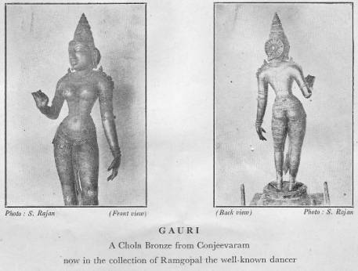

Gauri
A
Southern Bronze
By
K. B. IYER
The
Saivite bronzes of South India are justly world-renowned. Since Dr.
Coomaraswamy drew attention to their unique qualities, chiefly through such
examples as the Nataraja images and the portrait bronzes of Saivite saints,
other important pieces have come to light from the dark niches of ancient
temples and have passed into private collections, where they await study. So
exquisitely lovely are some of them that Mr. O. C. Ganguly’s work South
Indian Bronzes however valuable, looks incomplete, which, by the way, is
inevitable in any pioneering venture.

One
of such pieces is Gauri from the Kailasanath temple, Conjeeveram, now in the
collection of Ramgopal, the well-known dancer. En passani Mr. Ganguly
seems to have noticed this; plate XXXI of his South Indian Bronzes is
most likely an illustration of this. The notice it received at his hands being
iconographical, an aesthetic approach is called for and the task is rendered
easier by its present secular locale.
Exclusive
of the pedestal which is 9 inches, the figure is 26 inches in height. Both
tradition and stylistic features distinguish it as an early Chola work of
probably the 10th century. One need not have to wait for the Chola period or
for the emergence of Nataraja figures to feel the excellences of the bronzes of
this school; the 8th century Avalokiteswara from Ceylon, now in the Boston
Museum of Fine Arts, eloquently proclaims these.
Persuasion
is hardly required to feel the soaring lyrical quality of this extremely
elegant figure of the Devi, the gracious consort of Siva, posed as if on the
point of communicating an intimate thought or a beneficent assurance that has
lighted up the features. There is more purity than austerity in its expression.
That the innate primitive feeling of the school was still an abiding source of
strength and inspiration when this was produced is evident from the ‘live’
quality so immediately felt. The natural instinct of the lines is unimpeded and
nothing is pointedly so abstract as to render the form archaic. The torso is
very sensitively realised; the rounded perfection of the breasts and the
exquisite plastic feel of the chest, abdomen and navel and the gently swelling
curves of the broadening hips create the illusion of a warm, glowing, flesh
exuding the sensuous delight of an unageing youth. And yet, to how different a
world this belongs from that of the leaning dryad of Sanchi of 2nd cen. B.C.,
sporting over the abundant verdure of the tree-trunk in sheer pagan abandon?
These two, separated as they are, by a distance of 12 centuries attest to the
continuity of the same plastic tradition and subtle touch. The change in form
is significant and that in content or ‘feel’ is much more, transforming the
latter work into an articulate vision of a spiritual or mystic apprehension.
The flesh is rarefied and the resulting chastity of the body and limbs has a
virginal grandeur that is not merely of the physical. That the “two worlds of
spiritual purity and sensuous delight need not and ultimately cannot be
divided” was the discovery of the later Mahayana and Vaishnava lyrical spirit
as observed by Dr. Coomaraswamy with rare insight. This figure of Gauri could
unhesitatingly be classed as a fine example of this synthetic ideal in Indian
thought and art.
The
slight elongation of the limbs–a continuation of the Amaravati
tradition–imparts an ethereal slenderness, taking off the deadness of weight
and this feeling is supported by the high-peaked head-gear. The linear
sensitiveness and rhythms echo beyond the figure, specially in the left hand in
repose, the sensitive fingers of which seem warm, animate and caressing. The
mien is utterly dignified with just a suggestion of benign smile that assures,
consoles and protects.
The
garments and jewellery exist as if organically in relation to the body and
witness to the exquisite taste and sense of proportion, following, accentuating
and caressing “the surging tenderness of a smooth and rarefied flesh.” The
flame tips on the shoulders–the distended ear lobes are like drops in the
inter-spaces–are indeed pretty and decorative in function.
The
back view is no less satisfying in modeling and plastic feeling. The ornamental
coiffure functions as a striking device and serves organically to impart
strength and a pleasant rest for the eye.
Gauri
is the Gracious Mother of the Universe, the Better-half of Siva, half-female
half-male (Ardha-nariswara). In love and in devotion unexcelled
even among the gods, She is the supreme arche-type of conjugal felicity. When
love’s darts bruise young maidens’ hearts, their secret prayers are turned to
her. It is she who protects them from every shoal and storm on the unchartered
sea of married life. Just as Siva as Nata-raja symbolises the cosmic law of
rhythm, Parvati in her aspect as Gauri symbolises the universal and eternal
female instinct of yearning devotion, aspiration and concern for the male.
Isn’t this figure instinct with that poignant feeling which makes the
contemplation of beauty a haunting delight?